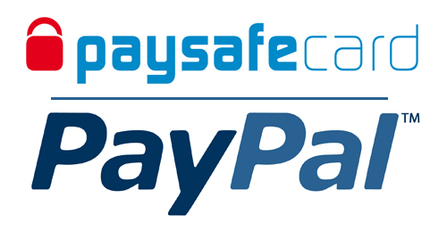
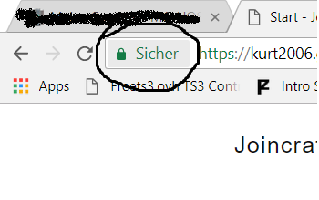

Man kann aus verschiedenen Gründen gebannt werden. Meist ist es wegen einen Regelverstoß. Deinen Grund kannst du im Banscreen unter dem Punkt |Reason:| sehen. Entbannen kannst du dich im Forum!
Meist sieht die Nachicht so aus: java.fragspferd.wasweisich | Dies kann 2 Gründe haben -> 1. Der Server ist aufgrund eines Buggs abgestürtzt | 2. Es liegt an deinen Client. Liegt es am Client reicht es meistens Minecraft neuzustarten (inklusive Luncher) Sollte es immernochnicht gehen Schreibe uns!
Dies kannst du im Forum tun -> Forum
Es gibt 2 Möglichkeiten einen Spieler zu Melden: Die 1. währe dies ingame zu Tun:
/report
oder im Forum!
Nein. Du kannst mit der App "PickaxeChat for Android" auf unseren Server von deinen Mobilgerät spielen! (Benötigt Mojangaccount)
Ja. Teilweise zumindest. Der Shop ist leicht verbuggt.
Ja. Es gibt einen Handy und einen PC Modus. Dieser wird automatisch gewählt.
1. Fliege mit der Maus über deine Benutzernamen rechtsoben in der Ecke.
2. Klicke auf "Profil bearbeiten".
3. Klicke rechtsoben auf "Passwort ändern".
Dies ist momentan nur möglich wenn du dich an einen Administator wendest.
1. Fliege mit der Maus über deine Benutzernamen rechtsoben in der Ecke.
2. Klicke auf "Profil bearbeiten".
Gehe auf die Loginpage (Klicke hier)
Klicke auf "Passwort Vergessen".
Du kannst momentan mit PaySafeCard und PayPal bezahlen.
Momentan besitzen wir keine Abbokäufe!
Nein. Mit dem Kauf im Shop erlischt dein Rückruferecht!
Nein. Wir geben deine Daten nicht an dritte weiter. Versprochen -> Unsere Website ist durch HTTPS und einen Zertifikat geschützt!
Du musst ein Forenaccount haben der auf deinen Namen (alter Name) passt -> Schicke Kurt2006 die Daten (Nutzername, Passwort) -> Fertig!
Dies wird meistens getan wenn dein Account gehackt wurde.
Du kannst dich jederzeit über Teamspeak oder über das Forum entsperren.